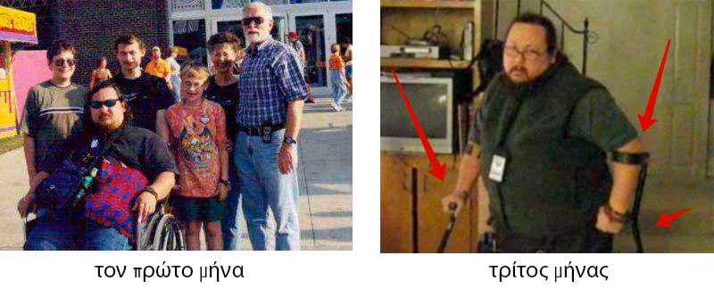
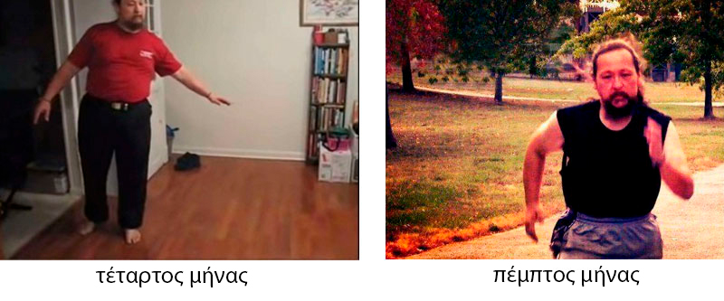
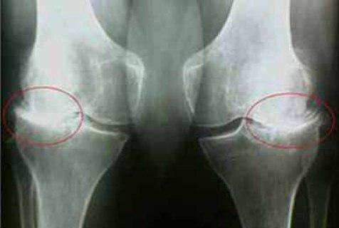
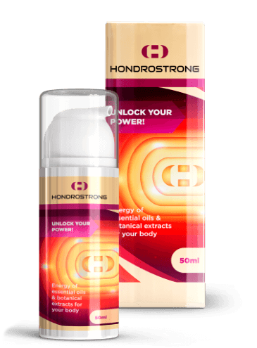

Συμφέρει περισσότερο να
θεραπεύσετε 1 φορά τις αρθρώσεις σας, παρά να το κάνετε συνεχώς!
Η αρθροπάθεια με έκανε ανάπηρο
μέσα σε λίγους μήνες, αλλά με την βοήθεια 4 φυτών αποκατέστησα γρήγορα τους
χόνδρους και τις αρθρώσεις
Θέλω να μοιραστώ μαζί σας την ιστορία μου, πως, όταν όντας ένα υγιές άτομο, μέσα σε 2 μήνες
βρέθηκα σε μια αναπηρική καρέκλα, έπειτα ανακάμψα γρήγορα και ξανασηκώθηκα στα πόδια μου!

Με λένε Αλέξη
Ιωακειμίδη και είμαι 46 ετών. Ποτέ στη ζωή μου δεν θα μπορούσα να πιστέψω ότι η ασθένεια των αρθρώσεων είναι
πολύ σοβαρή, όπως όλοι μας σκεφτόμουν: «Να βρεθώ εγώ σε αναπηρική καρέκλα; Όχι, αυτό αποκλείεται να συμβεί
σε μένα .... "Πιθανότατα, διαβάζοντας αυτές τις λέξεις, όλοι το ίδιο πιστεύουν ... αλλά υποτίμησα τον
συνηθισμένο πόνο στις αρθρώσεις…
Όλα ξεκίνησαν
κάπως έτσι, μια πολύ συνηθισμένη μέρα, στον δρόμο για την δουλειά ένιωσα στα γόνατά μου όχι πολύ δυνατού,
αλλά κάποιο είδος απότομου, δυσάρεστου πόνου. Στην αρχή, φυσικά, δεν έδωσα σημασία σε αυτό, λέγοντας από
μέσα μου Έλα μωρέ για ψίλου πήδημα τώρα να ανησυχώ, θα περάσει από μόνη του, γιατί όλα πάντα κάπως περνούσαν
από μόνα τους. Αλλά αυτή τη φορά όχι μόνο δεν πέρασε, αλλά το αντίθετο, για δύο μήνες τα γόνατά μου πονούσαν
αφόρητα κατά τη διάρκεια του φυσιολογικού περπατήματος και κάθε μέρα η κατάσταση γινόταν όλο και
χειρότερη..
Πίστεψα ότι
είχα κουράσει υπερβολικά τις αρθρώσεις μου, λόγω του ότι κάνω μια πολύ δραστήρια ζωή (συνεχώς ορθοστασία
στην δουλειά, έκανα και διάφορα αθλήματα εκείνη την εποχή) Νόμιζα ότι έπρεπε να ξεκουραστώ, πήρα άδεια για
να ξεκουράσω τα γόνατά μου όσο το δυνατόν περισσότερο, να βάλω καμιά αλοιφή και σίγουρα όλα θα περάσουν.
Πιθανώς πολλοί αγαπητοί αναγνώστες στις δικές τους περιπτώσεις να σκέφτηκαν με τον ίδιο τρόπο. Αλλά από
τέτοιες σκέψεις και από αλοιφές η κατάσταση δεν έγινε καλύτερη, ο πόνος εντάθηκε, επιπλέον αρκετά γρήγορα σε
σύντομο χρονικό διάστημα, η κατάσταση έφτασε στο σημείο που έπαψα να σηκώνομαι στα πόδια μου μετά από ένα
μήνα και άρχισα να μετακινούμαι στο διαμέρισμα σε αναπηρικό καροτσάκι, έφευγε η ημερήσια δόση παυσίπονων -
τουλάχιστον δύο δισκία.
Με λίγα λόγια,
η κατάσταση από αυτό που φαινόταν σαν ένα μικρό πρόβλημα με γοργούς ρυθμούς μετατράπηκε σε μια φριχτή
πραγματικότητα, δεν μπορούσα καν να φανταστώ ότι σε λίγους μήνες δεν θα μπορούσα να σηκωθώ στα πόδια μου
εξαιτίας του τρομερού πόνου!
Αν αρρωστήσετε πρέπει να πάτε
στον γιατρό, αυτός ξέρει τα πάντα για τις αρρώστιες θα σας κάνει θεραπεία μέχρι να πεθάνετε, αυτή είναι
άλλωστε και η δουλειά του

Τελικά δεν
κατάφερα να αποφύγω την επίσκεψη στον γιατρό, η γυναίκα μου επέμενε σε αυτό. Ο θεράπων με έστειλε σε έναν
ρευματολόγο, στον οποίο κατάφερα να φτάσω σε περισσότερο από ένα μήνα, υπάρχουν μεγάλες ουρές, δεν είμαι ο
μόνος που υποφέρει από αρθρώσεις, υπήρχαν πολλοί με το ίδιο πρόβλημα. Με υποδέχτηκε μια πολύ ηλικιωμένη
γιατρός με συνάντησε, χωρίς να μου πει κάτι μου έστειλε για ακτινογραφία και εξετάσεις αίματος / ούρων. Στο
δεύτερο ραντεβού, σε λίγα λεπτά, με διάγνωσε με κάποιο είδος αρθρίτιδας, πρωτοβάθμιας ή δευτεροβάθμιας τώρα
δεν θυμάμαι ακριβώς και δεν έχει σημασία.
Λοιπόν,
εντάξει η διάγνωση, δεν με ενδιαφέρει άλλωστε πως ονομάζεται, αλλά πώς να απαλλαγώ από αυτό το πρόβλημα το
συντομότερο δυνατό και να μην υπάρξουν στο μέλλον υποτροπές; Και εδώ με περίμεναν δυσάρεστα νέα, η
γιαγιά-γιατρός μου ανακοίνωσε την ηλικία μου ως τον κύριο λόγο αυτής της ασθένειας! Έτσι μου είπε: "Έχει να
κάνει με την ηλικία σας." Ποια ηλικία μωρέ?! Είμαι 47 ετών! Η κόρη μου είναι 2 χρονών, είμαι νέος μπαμπάς
και όχι κάνας γέρος με ρευματικά και αρθροπάθεια! Αλλά ακόμη περισσότερο με «χαροποιήσαν» οι συστάσεις για
θεραπεία, υπήρχαν τρεις από αυτές:
Η πρώτη ήταν
να αποφορτίσω τα πόδια μου, αν και αυτό δεν μυ επέτρεπε να το κάνω πια ο πόνος.
Η δεύτερη
σύσταση ήταν να αλείφω με κρέμες τα πόδια μου, από αυτές μωρέ που διαφημίζουν όλη την ώρα στην τηλεόραση.
Μερικές φορές ζηλεύω τους ευκολόπιστους ανθρώπους, τους λες φερ ειπείν ότι αν αλείφετε με αυτήν την κρέμα
όλα θα περάσουν, εγώ όμως είμαι αλλιώς θέλω να εμβαθύνω στα πάντα και να τα, πώς μια αλοιφή με ελάχιστη
διαπεραστικότητα μπορεί να διεισδύσει στο δέρμα, σε κάθε είδους μαλακούς και συνδετικούς ιστούς, να μπει
μέσα στην άρθρωση και να θεραπεύσει κάτι εκεί, ποιος θα μου εξηγήσει τη λογική αυτής της υπέροχης
διαδικασίας; Και επίσης εδώ θέλω να τονίσω.
Και η Τρίτη
σύσταση είναι να πίνω κάτι χάπια, που συμβάλλουν στην αποκατάσταση του ιστού του χόνδρου, και το τονίζω -
δεν αποκαθιστούν, αλλά συμβάλλουν μόνο. Και αυτό είναι! Πηγαίντε κάντε υπομονή και όταν ξαναμαζέψετε λεφτά
ελάτε ξανά...
Βγαίνοντας από
το ιατρείο κατάλαβα ότι θέλουν να με θεραπεύουν αλλά όχι να με κάνουν καλά... Και όπως μας φάνηκε ούτε οι
ίδιοι δεν καταλαβαίνουν ποια είναι η αιτία της ασθένειάς μου και εάν η αιτία είναι άγνωστη, πώς μπορεί να
εξαλειφθεί η ασθένεια; Εάν τα χάπια (παρεμπιπτόντως, όχι φθηνά) απλά συμβάλουν, σε τι συμβάλουν; Τι πρέπει
να αποκαταστήσει αυτόν τον ιστό, με ή χωρίς χάπια; Και γιατί το έκανε πριν, αλλά τώρα έπαψε να το κάνει;
Πολλά ερωτηματικά ... Φυσικά, υπήρχε ακόμα η επιλογή να πάω τα χρήματά μου σε ιδιωτικές κλινικές, αλλά κάτι
μου έλεγε ότι το αποτέλεσμα θα ήταν το ίδιο, μόνο πιο ακριβό. Δεν πιστεύω στην ιδιωτικές κλινικές ή στα
ιδιωτικά ινστιτούτα. Σε τελική ανάλυση, το πρόβλημα δεν έχει να κάνει με τον γιατρό, αν είναι μια
συνταξιούχος σε περιφερειακή κλινική ή μια νέα κοπέλα σε ένα μοντέρνο ιατρικό κέντρο, αλλά στην ίδια την
προσέγγιση του προβλήματος. Πώς μπορείτε να αντιμετωπίσετε κάτι χωρίς καν να προσπαθήσετε να καταλάβετε την
αιτία της νόσου; Είναι σαν να προσπαθείς να πιάσεις μια γκρίζα γάτα σε ένα σκοτεινό δωμάτιο, μπορεί να
καταφέρεις μπορεί και όχι. Αλλά εγώ πονάω, χρειάζομαι μια σίγουρη και εκατό τοις εκατό αποτελεσματική
θεραπεία.
Έπεσα σε
κατάθλιψη. Είχα πανικοβληθεί, δεν ήξερα τι να κάνω, είχα απογοητευτεί. Αλλά ευτυχώς η γυναίκα μου δεν
παρέδωσε τα όπλα και θα της είμαι πάντα ευγνώμων για αυτό! Μου είπε: Αν θέλεις να γίνεις καλά πρέπει να
πάρεις την κατάσταση στα χέρια σου.
Δεν πρέπει να
κάνετε αυτοθεραπεία, αυτός είναι νόμος, αλλά μπορείτε να βρείτε μόνοι σας μια αποτελεσματική θεραπεία. Η
γυναίκα μου άρχισε ψάχνει τρόπους και να αναρωτιέται πώς να αντιμετωπίσει την ασθένεια, σκαρφίστηκε κάτι και
αποφάσισε να πραγματοποιήσει πειράματα πάνω μου, συνειδητοποιώντας όλη την απάνθρωπη δράση αυτής της πράξης.
Και ξεκίνησα με την αυτο-εκπαίδευση.
Το Διαδίκτυο,
φυσικά, είναι ένα υπέροχο πράγμα, σε πολύ σύντομο χρονικό διάστημα μπορείτε να εξοικειωθείτε με τους θρύλους
της αρχαιότητας και να ακούσετε μια διάλεξη από καθηγητή από την άλλη άκρη της γης σε πραγματικό χρόνο.
Μάθετε τι γράφεται για τις αρθρώσεις στην κινεζική «πραγματεία του κίτρινου αυτοκράτορα» και τι σκέφτονται
οι οπαδοί της Αγιουρβέδα ή Βεντάντα και της γιόγκα, και πώς στην Αρχαία Ελλάδα γινόταν καλά ο κοσμάκης.
Βοήθησα επίσης
τη γυναίκα μου να αναζητήσει πληροφορίες, καθώς δεν υπήρχε τίποτα να κάνει στο κρεβάτι για μέρες. Αφού
περάσαμε 1,5 μήνες μελετώντας όλες τις διαθέσιμες πληροφορίες σχετικά με τη θεραπεία και την αποκατάσταση
των αρθρώσεων, έχουμε καταρτίσει για εμάς μια λίστα με πέντε φυσικά «διαμάντια» που χρησιμοποιήθηκαν σε
διαφορετικούς χρόνους για θεραπεία από Αυτοκράτορες, Βασιλείς, Γενικό Γραμματέα, Γιόγκι, Θιβετιανούς
μοναχούς , Old Believers και πολλούς άλλους.
Η πρώτη θέση
ανήκει στο "έλαιο έλατου". Το εκχύλισμα έλατου είναι ένα καθαρό συμπύκνωμα των μορίων που απαρτίζουν τον
χόνδρο και τα οποία αποκαθιστούν αυτόν τον ιστό του χόνδρου με εκπληκτική ταχύτητα.
Εκχύλισμα
ελαφόκερων maral. Χρησιμοποιήθηκε για πρώτη φορά στο Altai. Το χαρακτηριστικό των κέρατων maral είναι η
μοναδική τους ικανότητα να υγροποιούν και να αφαιρούν τις εναποθέσεις αλατιού. Κάνουν αμέσως τα αποθέματα
αλατιού στις αρθρώσεις πιο χαλαρούς, και μετά από 15-19 ημέρες τακτικής χρήσης, διαλύουν πλήρως τα άλατα
στις αρθρώσεις και τη σπονδυλική στήλη. Σίγουρα πρόκειται για ένα πολύ χρήσιμο συστατικό.
βιογενής
πρόπολη είναι το γρηγορότερο φυσικό αντιφλεγμονώδες "φάρμακο". πρόπολη καταστρέφει γρήγορα κάθε φλεγμονώδη
διαδικασία. Από αμνημονεύτων χρόνων έχει χρησιμοποιηθεί για τη θεραπεία της ισχιαλγίας, των ρευματισμών, της
πολυαρθρίτιδας, της ουρικής αρθρίτιδας και των κιρσών.
"Marsh
cinquefoil". Σταματά τον πόνο, και επίσης λειτουργεί ως ανοσοδιεγερτικό, αποκαθιστά την αυτοάνοση διαδικασία
του σώματος, η οποία είναι το σημείο εκκίνησης των αρθρώσεων και της υποβάθμισης του χόνδρου. Υπήρχε στο
τσαρικό φαρμακείο του Μεγάλου Πέτρου, ο οποίος είχε χρόνια προβλήματα με τις αρθρώσεις.
«Κόκκινη
ρίζα». Έγραψα συγκεκριμένα περίπου τέσσερα φαρμακευτικά συστατικά, το πέμπτο είναι μια κόκκινη ρίζα, δεν
θεραπεύει ακριβώς τις αρθρώσεις, αλλά είναι σημαντικό. Η κόκκινη ρίζα έχει την ιδιότητα να ενισχύει την
επίδραση των φαρμακευτικών συστατικών και να προστατεύει τους οστούς και τους χόνδρους ιστούς Με άλλα λόγια,
τα πρώτα τέσσερα φυτά θεραπεύουν αρθρώσεις και χόνδρους, και η κόκκινη ρίζα σώζει το επιτευχθέν αποτέλεσμα
για δεκαετίες.
Η γυναίκα μου βρήκε αυτό που θα
με έκανε καλά!
Εδώ και 2
μήνες αναζητούμε διαφορετικά προϊόντα που περιλαμβάνουν αυτήν τη σύνθεση, αλλά οι αναζητήσεις δεν έφεραν το
επιθυμητό αποτέλεσμα. Ήμουν προσωπικά πολύ απογοητευμένος, και είχα πια πολλές αμφιβολίες ότι κάτι θα
μπορούσε να με βοηθήσει, ο καθένας θα αμφισβητούσε αν ήταν στη θέση μου.
Αλλά η γυναίκα
μου δεν τα παράτησε! Ήταν διαρκώς σε επιφυλακή, και κατά κάποιον τρόπο έπεσε τυχαία σε ένα άρθρο ενός
γιατρού από ένα ομοσπονδιακό κανάλι, ο οποίος μιλούσε για μια θεραπεία που αποκαθιστά οποιονδήποτε χόνδρο,
οποιαδήποτε άρθρωση. Ενθουσιαστήκαμε, εξοικειωθήκαμε με τη συνταγή για το εν λόγω φάρμακο και η σύνθεση
συνέπεσε εντελώς με τη λίστα μας παραπάνω! Έχει κέρατα maral, πρόπολη, λάδι έλατου, κόκκινη ρίζα, γενικά, το
σύνολο των καλύτερων εκχυλισμάτων για αρθρώσεις.
Χαιρόμασταν
που βρήκαμε αυτό που ψάχναμε! Αλλά βρεθήκαμε αντιμέτωποι με ένα άλλο πρόβλημα, απολύθηκα από τη δουλειά μου,
καθώς κανείς δεν θέλει να κρατά στην δουλειά ανάπηρους. Οικονομικά είμασταν σε άσχημη κατάσταση, αφού ο
μισθός της γυναίκας μου ήταν μικρός. Η τιμή του φαρμάκου κυμαινόταν συνεχώς και ήταν αρκετά υψηλή, και για 2
εβδομάδεςη γυναίκα μου πήγε καθημερινά σε διαφορετικούς ιστότοπους αναζητώντας αυτό το μέσο, είτε
εμφανίστηκε σε προσιτή τιμή. Και μια μέρα είδε ότι θα μπορούσε να γραφτεί στον ιστότοπο αυτού του γιατρού
και να το λάβει σε προνομιακή τιμή. Με ενημέρωσε αμέσως και αμέσως έκανα την παραγγελία, γιατί ήξερα ότι θα
εξαντληθεί σε χρόνο dt, πριν προλάβεις να πεις κίμινο! Κυριολεκτικά 10 λεπτά αργότερα, με πήρε μια κοπελιά
και άρχισε να μου μιλάει λεπτομερώς για το μέσο στο στυλ:
Το φάρμακο δρα σχεδόν αμέσως, ήδη από τη 2η ημέρα, η κινητικότητα των αρθρώσεων επιστρέφει
και ο πόνος γενικά εξαφανίζεται μετά από 8-12 ώρες. Αλλά ακριβώς για τη θεραπεία και την ενοποίηση του
αποτελέσματος απαιτείται ένας κύκλος θεραπείας για πολλά χρόνια - 27-35 ημέρες. Πρόκειται για περίπου 4-5
συσκευασίες του φαρμάκου, παράγεται με τη μορφή πλαστικών αμπούλων μιας χρήσης με τζελ.
– Κοπέλια μην με παρεξηγήσετε, αλλά ξέρω περισσότερα για αυτό το φάρμακο από ότι εσείς. Θέλω
να παραγγείλω με παράδοση 10 πακέτα ταυτόχρονα.
– Δυστυχώς, δεν είναι δυνατή η απόκτηση 10 πακέτων. Λόγω της αυξημένης ζήτησης για το
προτιμησιακό πρόγραμμα, παρέχουμε το πολύ 5 πακέτα ανά άτομο, επιπλέον, στο 99% των περιπτώσεων 5 πακέτα
είναι αρκετά για πλήρη αποκατάσταση.
– Κοίτα να δεις τι γίνεται! Περίμενα 2 εβδομάδες και ήθελα να πάρω για να έχω και για μετά...
Τέλος πάντων θα πάρω 5…
Ήθελα καλού
κακού να πάρω 10. Πρόκειται άλλωστε για σπάνιο φάρμακο που είναι δυσεύρετο σε τέτοια προνομιακή τιμή. Θα
μπορούσα στην τελική να το δωρίσω σε κάποιον, αλλά η πολιτική της εταιρείας είναι αυστηρή σε αυτά τα θέματα
–Όχι πάνω από 5 συσκευασίες σε ένα άτομο με την προνομιακή τιμή.
Τελικά μου
επέτρεψαν να παραγγείλω μόνο 5 πακέτα αυτού του φαρμάκου, επιβεβαίωσαν την παραγγελία, είπαν - περιμένετε, η
παραγγελία σας θα φτάσει ταχυδρομικώς (αποδείχθηκε ότι με κούριερ ήθελε λίγο περισσότερο). Πρέπει να πω ότι
δεν έχω λάβει τίποτα ταχυδρομικώς εδώ και πολύ καιρό, γι 'αυτό ήμουν λίγο ανήσυχος. Φοβόμουν μην χαθεί το
φάρμακο μου και μετά περιμένω άλλους 2 μήνες για να εμφανιστεί ξανά με έκπτωση.
Ευτυχώς όλα
πήγαν καλά. Προς μεγάλη μου έκπληξη ήρθε πολύ γρήγορα, μόλις μέσα σε μερικές μέρες, η παραγγελία μου ήταν
στο ταχυδρομείο. Η γυναίκα μου παρέλαβε την παραγγελία.
Τα αποτελέσματα ήταν
καταπληκτικά!
Φυσικά,
καταλάβαινα ότι η θεραπεία θα ήταν σχετικά γρήγορη, η θεραπεία θα κρατούσε 30-35 ημέρες, αλλά το ότι θα
ένιωθα το αποτέλεσμα ΤΟΣΟ ΓΡΗΓΟΡΑ αποτέλεσε έκπληξη για μένα! (παρακάτω περιγράφω πώς ένιωσα μετά από 1
εβδομάδα, μετά από 2 εβδομάδες κ.λπ.).
Άλειψα τα
γόνατα πριν τον ύπνο, ξάπλωσα ανάσκελα, όπως συνήθως, αφού έχω ξεσυνηθίσει να κοιμάμαι διαφορετικά λόγω του
πόνου. Ξύπνησα στην δεξιά πλευρά, και με τις αρθρώσεις μου να ακουμπάνε το στρώμα αλλά δεν ένιωθα πια πόνο!
Σιγά σιγά άρχισα να σηκώνω τα πόδια μου ψηλά αλλά πόνο δεν ένιωθα! Μέσα σε 8 ύπνου με αυτό το μέσο ο πόνος
έφυγε! Σηκώθηκα, ακούμπησα τα πόδια μου στο πάτωμα, και θέλησα να σταθώ στο έδαφος, άκουσα ένα κλικ και
ένιωσα λίγο πόνο. Είπα μέσα μου ότι πρέπει να κάνω κράτει με το περπάτημα άλλωστε πέρασαν μόνο 8 ώρες
θεραπείας.
Οι οδηγίες
χρήσης έλεγαν: Εφαρμόστε πάνω στις καταπονημένες αρθρώσεις 1 φορά την ημέρα πριν τον ύπνο. Εγώ αμέσως άρχισα
να εφαρμόζω 2 φορές για να επιταχύνω την διαδικασία. Και έβαζα και νάιλον για να διατηρώ την ζέστη.
Το ημερολόγιο της αποθεραπείας
μου
Μου πήρε
περίπου 6 μήνες για να βρω το μέσο αυτό και άλλους 2 μήνες ώσπου να γίνει διαθέσιμο. Αλλά άξιζε η
αναμονή!
Για να μην τα
πολυλογώ αυτά τα πειράματα που έκανα στον εαυτό μου έφεραν φοβερά αποτελέσματα, πλήρη αποθεραπεία, και τώρα
θα προσπαθήσω να σας διηγηθώ την εξέλιξη της αποθεραπείας ανά εβδομάδα .
8 ώρες
θεραπείας:σε κατάσταση ανάπαυσης εξαφανίστηκε ο πόνος. Κάποιες ενοχλήσεις παρέμειναν κατά την
κίνηση.
1
μέρα:Ο πόνος εξαφανίστηκε εντελώς. Έφυγε το πρίξιμο. Μπορώ να λυγίσω τα γόνατά μου, αλλά οι
αρθρώσεις μου εξακολουθούν να κάνουν κλικ.
7
μέραΕπιτέλους τα κλικ στις αρθρώσεις εξαφανίστηκαν. Κινούμαι εύκολα, λυγίζω τα γόνατά μου, μπορώ
εύκολα να σηκωθώ στα πόδια μου, αλλά δεν έχω δοκιμάσει ακόμα να περπατήσω.
14
μέρα:νιώθω τον εαυτό μου υγιή! Περπατάω στο διαμέρισμα βγήκα έξω για βόλτα χωρίς να νιώθω
ενοχλήσεις!
28
μέρα:νιώθω υπέροχα, περπάτησα 1 χμ και ΔΕΝ ΕΝΙΩΣΑ ΚΑΘΟΛΟΥ ΠΟΝΟ! Λες και ξαναγεννήθηκα!
35-η
μέρα:έκανα εξετάσεις και ακτινογραφία του ώμου και του αγκώνα. Δεν υπάρχουν ίχνη αρθρώσεων! Ο
χόνδρος στις αρθρώσεις είναι σαν ενός νεαρού 30 ετών. Ο γιατρός είπε ότι στην προηγούμενη ακτινογραφία
υπήρχε πιθανότατα ένα ελάττωμα, οπότε η διάγνωση της οστεοαρθρίτιδας ήταν εσφαλμένη.

Είναι ευκολότερο να θεραπεύσετε
τις αρθρώσεις σας 1 φορά παρά να τις θεραπεύετε συνεχώς!
Ξόδεψα πολλά
χρήματα για διάφορα προϊόντα για την αποκατάσταση των αρθρώσεων, για ραντεβού γιατρών, για παυσίπονα, ακόμη
και για την ίδια αναπηρική καρέκλα. Και συνειδητοποίησα ένα πράγμα - είναι καλύτερα να κάνεις αποτελεσματική
θεραπεία μία φορά και να ξοδέψεις περίπου 100 ευρώ για έναν κύκλο θεραπείας, που θα είναι πολύ φθηνότερο από
το να αγοράζεις συνεχώς άχρηστες αλοιφές, παυσίπονα, χάπια και να πηγαίνεις σε ραντεβού γιατρών, κάνοντας
μαγνητική, και κάθε είδους ακριβές εξετάσεις. Ακόμα και το γεγονός ότι μπορείς να μείνεις ανάπηρος, είναι
καλύτερο να αγοράσεις έναν κύκλο θεραπείας και να θεραπευτείς παρά να μην μπορείς να περπατάς μετά από λίγο
καιρό, σκεφτείτε το καλά…. Έπεσα θύμα διαφόρων φαρμάκων, τα οποία είναι στην ουσία απάτη, μην χάνετε το
χρόνο σας, πιστέψτε τη θλιβερή εμπειρία μου :( Σας είπα την ιστορία μου και η απόφαση είναι δική σας.!!!
P.S.Αγαπητέ αναγνώστη, σας ευχαριστώ που διαβάσατε αυτό το άρθρο μέχρι το τέλος, χαίρομαι
πολύ για αυτό. Σε ένδειξη ευγνωμοσύνης για την υπομονή σας, παρακάτω μπορείτε να αφήσετε ένα αίτημα για το
φάρμακο. Τώρα πωλείται με προσφορά περίπου 1 φορά σε 2 μήνες, αλλά η αναμονή αξίζει τον κόπο, πιστέψτε με.
Ξέχασα να σας πω ότι το σκεύασμα
ονομάζεται .
Ιδού η φωτογραφία:

Χρειαστήκαμε
έξι μήνες για να βρούμε αυτό το μέσο και σας δίνω αυτές τις πληροφορίες σε 5 λεπτά ανάγνωσης, αφού πρώτα από
όλα άνθρωπος και καταλαβαίνω ότι πολλοί, όπως εγώ, χρειάζονται βοήθεια. Μοιραστείτε τις επιτυχίες σας στα
σχόλια. Εάν γνωρίζετε περισσότερα παρόμοια φάρμακα, μην διστάσετε να γράψετε!
Την
αποθεραπεία μου την οφείλω στην γυναίκα μου, που δεν με παράτησε και έψαχνε τρόπους να με σηκώσει ξανά στα
πόδια. Την αγαπάω πολύ και την σέβομαι και την τιμώ απεριόριστα!
Η προσφορά ισχύει μέχρι τις συμπεριλαμβανομένης της ημερομηνίας αυτής. Σε κάθε στάδιο
διατίθενται 30.000 μονάδες του φαρμάκου. Και θα τελειώσει εντελώς σε 3-4 εβδομάδες. Και αυτό παρά το γεγονός
ότι δεν υπάρχουν διαφημίσεις στην τηλεόραση και το ραδιόφωνο. Οι άνθρωποι διαβιβάζουν πληροφορίες ο ένας
στον άλλο, συμβουλεύουν φίλους και συγγενείς. Ήταν έκπληξη ακόμη και για εμάς ότι οι πληροφορίες για το
θα εξαπλώνονταν τόσο γρήγορα..
Για
αυτό αν σταθήκατε τυχεροί και προλάβατε πριν την καθορισμένη ημερομηνία, συνιστώ να βιαστείτε να κάνετε την
παραγγελία του όσο το δυνατό πιο γρήγορα. Φέτος δεν θα υπάρξει δεύτερο πρόγραμμα τέτοιου
είδους.
Στα
αποθέματα του προϊόντος με την προνομιακή τιμή:
43 κομμάτια


Εμένα το με βοήθησε πολύ! Πρήστηκε το γόνατο δεν μπορούσα να λυγίσω το πόδι μου. Ο πατέρας μου μου έφερε από κάπου το και Δόξα το Θεό! Δείτε την διαφορά: